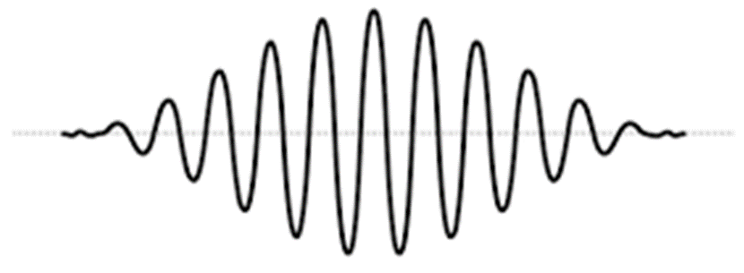
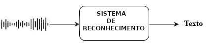

2 Texto ou fala?
2.1 Histórico e panorama da área
O processamento da língua falada depende de uma vasta gama de conhecimentos que inclui acústica, fonologia, fonética, linguística geral, semântica, sintaxe, pragmática, estruturas discursivas, entre outras. Para além disso, outros conhecimentos mais comuns à ciência da computação, à engenharia elétrica, à matemática e, até mesmo à psicologia, também são necessários. Neste contexto, este capítulo visa oferecer um panorama da área e das habilidades e métodos mais conhecidos no universo do processamento computacional da língua falada.
Desde os primórdios do surgimento da interação falada na espécie humana até os dias de hoje – e podemos afirmar com tranquilidade, que assim também será no futuro imaginável –, a fala tem sido o principal instrumento para a troca de informações e de coesão social (Rizzolatti; Arbib, 1998). É através da fala1 que expressamos nossas emoções, a nossa atitude em relação a fatos e eventos, bem como negociamos ideias e ações. A capacidade linguística nos diferencia de outras espécies, mas é a fala, e o que ela nos proporciona, que nos identifica como humanos. Estima-se que a fala tenha surgido na filogênese humana há cerca de 60 mil anos, enquanto a escrita, que é uma tecnologia desenvolvida pelos humanos, surgiu provavelmente há cerca de 10 mil anos. A chamada “dupla articulação” presente na linguagem humana é uma habilidade exclusiva da nossa espécie. Ela se caracteriza por ser a articulação entre unidades significativas (morfemas) e fonemas, que são elementos finitos que se combinam de forma variada, criando infinitas possibilidades de morfemas2. A língua falada é hoje expandida para além do domínio da interação face-a-face para meios como a telefonia, a televisão, a interação via computadores. Os aplicativos para interações multimodais imagem/som ganharam uma dimensão inimaginável com a eclosão da pandemia do Sars-Cov-19 em 2020, demonstrando claramente a preferência dos humanos pela interação via fala.
Tal preferência também se reflete na interação homem-máquina e, apesar de ainda estarmos distantes de um mundo em que homens e máquinas interagem majoritariamente através da verbalização oral, já temos aplicações que nos permitem interagir com as máquinas através de comandos orais no contexto doméstico, comercial e computacional.
Em sua fase inicial, o processamento de língua falada em português era bastante limitado devido à falta de recursos computacionais e técnicas apropriadas. As primeiras abordagens eram baseadas em regras gramaticais e modelos acústicos simples. No entanto, com o avanço da tecnologia e o aumento do poder computacional, novas técnicas e abordagens foram desenvolvidas, resultando em avanços significativos nessa área.
A partir da década de 1990, técnicas baseadas em estatística começaram a ganhar popularidade. Esses modelos estatísticos utilizam algoritmos de aprendizado de máquina, como as redes neurais artificiais, para melhorar o desempenho do processamento de língua falada em português. Com a disponibilidade de grandes quantidades de dados de fala e avanços em hardware e software, os sistemas de reconhecimento de fala começaram a se tornar mais precisos e eficientes.
Outro marco importante no processamento de língua falada em português foi a introdução dos sistemas de síntese de fala (Subseção Síntese de fala). Esses sistemas permitem que um computador gere fala humana a partir de texto escrito em português. Inicialmente, a síntese de fala em português era baseada em técnicas concatenativas, que envolviam a gravação de segmentos de fala de um locutor humano e a concatenação desses segmentos para gerar a fala sintetizada. A concatenação refere-se ao processo de unir ou combinar várias partes ou segmentos de fala para formar uma sequência contínua ou mais longa de palavras ou frases. Com o tempo, surgiram abordagens baseadas em síntese de formantes (na fala, um formante é uma ressonância específica ou pico de intensidade em um espectrograma de som. Os formantes são associados à forma e ao posicionamento da cavidade oral, da faringe e da língua durante a produção de sons da fala, especialmente as vogais) e síntese de fala concatenativa com modelos estatísticos, proporcionando uma qualidade de síntese cada vez melhor.
Avanços mais recentes no processamento da fala em português estão relacionados ao uso de modelos de linguagem neural (Capítulo Modelos de linguagem), como os modelos de transformação de sequência a sequência (Seq2Seq) e as redes neurais convolucionais (CNNs) e recorrentes (RNNs). Esses modelos têm oferecido resultados impressionantes em várias tarefas de processamento de língua falada, como reconhecimento automático de fala, tradução automática de fala e resumo automático de áudio.
Além disso, com o advento dos assistentes virtuais e sistemas de processamento de linguagem natural, a interação por meio da fala em português tornou-se cada vez mais comum. Empresas de tecnologia estão investindo em pesquisas e desenvolvimento para melhorar a compreensão e a resposta dos sistemas de processamento de língua falada em português, a fim de proporcionar uma experiência mais natural e intuitiva aos usuários.
Para que se alcancem bons resultados no processamento computacional da fala é preciso que haja datasets e corpora de fala3 de alta qualidade. Tem havido um esforço considerável da comunidade de pesquisadores para a compilação de dados dessa natureza. Para o português brasileiro, destaca-se o recente corpus CORAA ASR v. 1.1 (Corpus de Áudios Anotados)4 voltado para tarefas de reconhecimento de fala (Candido Junior et al., 2021), que é apresentado no Capítulo Recursos para o processamento de fala.
Os sons da fala podem ser digitalizados e processados usando-se algoritmos tanto para reconhecimento de fala (transcrição de formas de onda em texto) quanto para síntese de fala (conversão de texto em formas de onda). O processo de digitalização da fala envolve a conversão do sinal analógico das ondas sonoras em um formato digital que pode ser armazenado e manipulado por um computador. Isso é normalmente feito usando-se um conversor analógico-digital (CAD), que amostra, isto é, faz uma amostragem da onda sonora em intervalos regulares e converte cada amostra em um número binário. Uma vez que o sinal da fala tenha sido digitalizado, ele pode ser processado usando-se várias técnicas, como filtragem, compressão e análise.
Um sistema computacional para a língua falada necessita de capacidades tanto de reconhecimento quanto de síntese de fala. Entretanto, esses dois componentes não são suficientes para a construção de um sistema útil. Um componente de compreensão e diálogo é necessário para a interação com o usuário; o conhecimento de domínio é necessário para guiar a interpretação da fala pelo sistema e permitir que ele determine a ação apropriada. Para todos esses componentes, há uma série de desafios, que incluem robustez, flexibilidade, facilidade de integração e eficiência de engenharia.
2.2 Aspectos teóricos fundamentais
A língua falada é utilizada para diversas funções que se estabelecem entre falantes e ouvintes. A produção e a percepção são ambos elementos importantes na cadeia da fala. A fala se inicia com uma intenção (volição) de comunicação no cérebro do falante, o qual ativa movimentos musculares para a produção de sons. O ouvinte, por sua vez, recebe os sinais sonoros em seu sistema auditivo, processando-os para transformá-los em sinais neurológicos que o cérebro pode compreender. O falante monitora e controla continuamente os órgãos vocais ao receber a sua própria fala como feedback (Moore, 2007).
Considerando os componentes universais da comunicação verbal, a interação falante/ouvinte é tecida a partir de vários elementos distintos. Como dito, o processo de produção da fala começa com a mensagem semântica na mente de uma pessoa a ser transmitida ao ouvinte através da fala. O equivalente computacional ao processo de formulação da mensagem é a semântica da aplicação que cria o conceito a ser expresso. Após a criação da mensagem, o próximo passo é convertê-la em uma sequência de palavras. Cada palavra consiste em uma sequência de fonemas e respectivos alofones (realizações fonéticas correlacionadas do fonema) que correspondem à pronúncia das palavras. Cada frase também contém um padrão prosódico que denota a duração de cada fonema, entonação da frase e volume dos sons. Uma vez que o sistema de linguagem finaliza o mapeamento, o falante executa uma série de sinais neuromusculares. Os comandos neuromusculares realizam o mapeamento articulatório para controlar as cordas vocais, lábios, mandíbula, língua e véu palatino, produzindo assim a sequência sonora como saída final. O processo de compreensão da fala funciona na ordem inversa. Primeiro, o sinal é enviado para a cóclea no ouvido interno, que realiza a análise de frequência como um banco de filtros. Em seguida, um processo de transdução neural converte o sinal espectral em sinais de atividade no nervo auditivo, correspondendo aproximadamente a um componente de extração de recursos. Atualmente, ainda não está claro como a atividade neural é mapeada no sistema de linguagem e como a compreensão da mensagem é alcançada no cérebro.
Os sinais de fala são compostos de padrões sonoros analógicos que servem como base para uma representação discreta e simbólica da linguagem falada – fonemas, sílabas e palavras. A produção e interpretação desses sons são regidas pela sintaxe, semântica e estrutura informacional da língua falada. Neste capítulo, adotamos uma abordagem de baixo para cima para introduzir os conceitos básicos, começando pelos sons e passando pela fonética e fonologia, chegando até as sílabas e palavras.
2.2.1 A estrutura da língua falada
Nesta seção, revisamos brevemente os sistemas de produção e percepção de fala humana. Esperamos que, algum dia, a pesquisa em linguagem falada nos permita construir um sistema de computador tão bom quanto o nosso próprio sistema de produção e compreensão de fala.
2.2.1.1 Som
O som é uma onda de pressão longitudinal formada por compressões e rarefações das moléculas de ar, em uma direção paralela àquela da aplicação de energia. Compressões são zonas onde as moléculas de ar foram forçadas pela aplicação de energia a uma configuração mais apertada do que o normal, e rarefações são zonas onde as moléculas de ar estão menos densamente empacotadas. As configurações alternadas de compressão e rarefação de moléculas de ar ao longo do caminho de uma fonte de energia são às vezes descritas pelo gráfico de uma onda senoidal. A forma básica de uma curva senoidal (Figura 2.1) é de uma onda suave, que se repete ao longo de um eixo horizontal. Ela se assemelha a uma série de montanhas e vales, subindo e descendo de forma suave. Neste tipo de representação, as cristas da curva senoidal correspondem a momentos de compressão máxima e os vales correspondem a momentos de rarefação máxima.

2.2.1.2 Produção de Fala5
Aqui revisamos os sistemas básicos de produção de fala humana, que influenciaram a pesquisa em codificação, síntese e reconhecimento de fala.6
2.2.1.2.1 Articuladores
A fala é produzida por ondas de pressão de ar que emanam da boca e das narinas de um falante.7 Na maioria das línguas do mundo, o inventário de fonemas pode ser dividido em duas classes básicas:
- Consoantes – articuladas na presença de constrições na garganta ou obstruções na boca (língua, dentes, lábios) enquanto falamos;
- Vogais – articuladas sem grandes constrições e obstruções.
Os sons podem ser subdivididos ainda mais em subgrupos com base em certas propriedades articulatórias. Essas propriedades derivam da anatomia de alguns articuladores importantes e dos locais onde eles tocam as fronteiras do trato vocal humano. Além disso, um grande número de músculos contribui para a posição e o movimento dos articuladores. Nós nos restringimos a apenas uma visão esquemática dos principais articuladores. Os componentes principais do aparelho de produção da fala são os pulmões, traquéia, laringe (órgão de produção de voz), cavidade faríngea (garganta), cavidade oral e nasal. As cavidades faríngea e oral são geralmente referidas como o trato vocal, e a cavidade nasal como o trato nasal. O aparelho de produção de fala humano consiste em:
- Pulmões: fonte de ar durante a fala;
- Cordas vocais (laringe): quando as pregas vocais são mantidas próximas uma da outra e oscilam uma contra a outra durante um som da fala, o som é categorizado como sonoro. Por exemplo, /b d g/. Quando as pregas são muito soltas ou tensas para vibrar periodicamente, o som é categorizado como surdo. Por exemplo, /p t k/. O local onde as pregas vocais se unem é chamado de glote;
- Véu palatino (palato mole): atua como uma válvula, abrindo para permitir a passagem de ar (e, portanto, ressonância) através da cavidade nasal. Sons produzidos com a aba aberta incluem /m/ e /n/;
- Palato duro: uma superfície relativamente dura e longa no teto dentro da boca; quando a língua é colocada contra ela, permite a articulação de consoantes, como o \(\lambda\) em alho /a\(\lambda\)u/;
- Língua: articulador flexível, afastado do palato para vogais, colocado próximo ou sobre o palato ou outras superfícies duras para articulação de consoantes;
- Dentes: outro local de articulação usado para segurar a língua para certas consoantes, como /t d/;
- Lábios: podem ser arredondados ou espalhados para afetar a qualidade das vogais, e completamente fechados para interromper o fluxo de ar oral em certas consoantes /p b m/.
2.2.1.2.2 O Mecanismo de Sonorização
A distinção mais fundamental entre os tipos de som na fala é a distinção sonoro/surdo. Sons sonoros, incluindo vogais, têm em sua estrutura temporal e de frequência um padrão regular que sons surdos, como a consoante /s/, não possuem. Sons sonoros geralmente têm mais energia. O que no mecanismo de produção de fala cria essa distinção fundamental? Como já dito na Subseção Articuladores, quando as pregas vocais vibram durante a articulação do fonema, o fonema é considerado sonoro; caso contrário, é surdo. Vogais são sonoras durante toda a sua duração. Os timbres distintos de vogais são criados usando a língua e os lábios para moldar a principal cavidade de ressonância oral de maneiras diferentes. As pregas vocais vibram em taxas mais lentas ou mais rápidas, desde tão baixas quanto 60 ciclos por segundo (Hz) para um homem de tamanho grande, até 300 Hz ou mais para uma mulher ou criança pequena. A taxa de ciclagem (abertura e fechamento) das pregas vocais na laringe durante a fonação de sons sonoros é chamada de frequência fundamental(f0). Isso ocorre porque ela estabelece a linha de base periódica para todos os harmônicos de frequência mais alta contribuídos pelas cavidades de ressonância faríngea e oral. A frequência fundamental também contribui mais do que qualquer outro fator único para a percepção de altura (o aumento e queda semelhante à música das tonalidades de voz) na fala.
Uma vez que a onda glotal é periódica, consistindo na frequência fundamental (f0) e em um número de harmônicos (múltiplos integrais de f0), ela pode ser analisada como uma soma de ondas senoidais. As ressonâncias do trato vocal (acima da glote) são excitadas pela energia glotal. Vamos supor, para simplicidade, que o trato vocal seja um tubo reto de área transversal uniforme, fechado na extremidade da glote e aberto nos lábios. Quando a forma do trato vocal muda, as ressonâncias também mudam. Harmônicos próximos às ressonâncias são enfatizados, e, na fala, as ressonâncias das cavidades que são típicas de configurações articulatórias particulares (por exemplo, os diferentes timbres vocálicos) são chamadas de formantes. As vogais em uma forma de onda de fala real podem ser visualizadas a partir de várias perspectivas diferentes, por exemplo, enfatizando uma visão em seção transversal das respostas harmônicas em um único momento ou, por outro lado, uma visão de longo prazo da evolução da trajetória dos formantes ao longo do tempo.
2.2.1.3 Percepção da Fala
Existem dois componentes principais no sistema de percepção auditiva: os órgãos auditivos periféricos (orelhas) e o sistema nervoso auditivo (cérebro). A orelha (ouvido externo) capta um sinal de pressão acústica, processa-o, transformando-o primeiro em um padrão de vibração mecânica na membrana basilar e depois representando o padrão por uma série de pulsos a serem transmitidos pelo nervo auditivo. A informação perceptual é extraída em vários estágios do sistema nervoso auditivo. Nesta seção, focamos principalmente nos órgãos auditivos.
2.2.1.3.1 Fisiologia do Ouvido
O ouvido humano tem três partes: o ouvido externo, o ouvido médio e o ouvido interno. O ouvido externo consiste na parte visível externa e no canal auditivo externo, que forma um tubo ao longo do qual o som viaja. Esse tubo tem cerca de 2,5 cm de comprimento e é coberto pelo tímpano na extremidade distante. Quando variações na pressão do ar alcançam o tímpano do exterior, ele vibra e transmite as vibrações aos ossos adjacentes do seu lado oposto. A vibração do tímpano está na mesma frequência (compressão e rarefação alternadas) que a onda de pressão sonora que chega. O ouvido médio é um espaço ou cavidade cheia de ar com cerca de 1,3 cm de largura e volume de cerca de 6 cm³. O ar viaja pela abertura (quando aberta) que conecta a cavidade com o nariz e a garganta. Há, ainda, a janela oval, que é uma pequena membrana na interface óssea com o ouvido interno (cóclea). Uma vez que as paredes da cóclea são ósseas, a energia é transferida por ação mecânica do estribo para uma impressão na membrana que se estende sobre a janela oval.
A estrutura relevante do ouvido interno para a percepção sonora é a cóclea, que se comunica diretamente com o nervo auditivo, conduzindo uma representação do som para o cérebro. A cóclea é um tubo espiralado de cerca de 3,5 cm de comprimento, que se enrola cerca de 2,6 vezes. A espiral é dividida, principalmente pela membrana basilar que corre longitudinalmente, em duas câmaras preenchidas de líquido. A cóclea pode ser considerada grosseiramente como um banco de filtros, cujas saídas são ordenadas por localização, de modo que uma transformação de frequência local é realizada. Os filtros mais próximos da base da cóclea respondem às frequências mais altas, e aqueles mais próximos do ápice respondem às mais baixas.
Em psicoacústica, faz-se uma distinção básica entre os atributos perceptuais de um som, especialmente de um som de fala, e as propriedades físicas mensuráveis que o caracterizam. Cada um dos atributos perceptuais, conforme listado a seguir, parece ter uma forte correlação com uma propriedade física principal, mas a conexão é complexa, porque outras propriedades físicas do som podem afetar a percepção de maneiras complexas.
O Quadro 2.1 traz a relação entre atributos perceptuais e físicos do som.
Quadro 2.1 Relação entre atributos perceptuais e físicos do som
Embora sons com níveis de intensidade maiores geralmente soem mais altos, a sensibilidade do ouvido varia com a frequência e a qualidade do som. Uma divergência fundamental entre as qualidades físicas e perceptuais é o fenômeno da percepção de igualdade de intensidade não uniforme de tons de frequências variadas. Em geral, tons de diferentes alturas têm diferentes níveis percebidos de volume. Há uma relativa insensibilidade do ouvido a sons de baixa frequência em níveis de intensidade moderados a baixos. A sensibilidade auditiva atinge um máximo em torno de 4 kHz, que está próximo da primeira frequência de ressonância do canal auditivo externo, e atinge outro pico em torno de 13 kHz, a frequência da segunda ressonância.
A altura está, de fato, mais intimamente relacionada com a frequência fundamental. Quanto maior a frequência fundamental, maior a altura que percebemos. No entanto, a discriminação entre duas alturas depende da frequência da altura inferior. A altura percebida mudará à medida que a intensidade aumentar e a frequência for mantida constante.
Em um exemplo da não identidade de efeitos acústicos e perceptuais, foi observado experimentalmente que, quando o ouvido é exposto a dois ou mais tons diferentes, é comum que um tom possa mascarar os outros. O mascaramento provavelmente é mais bem explicado como um deslocamento ascendente no limiar auditivo do tom mais fraco pelo tom mais alto. Tons puros, sons complexos, bandas estreitas e amplas de ruído mostram diferenças em sua capacidade de mascarar outros sons. Em geral, tons puros, próximos em frequência, se mascaram mais do que tons amplamente separados em frequência. Um tom puro mascara tons de frequência mais alta com mais eficácia do que tons de frequência mais baixa. Quanto maior a intensidade do tom de mascaramento, mais ampla é a faixa de frequências que ele pode mascarar. O mascaramento, no contexto da fala e da audição, pode ter um impacto significativo, causando dificuldade de compreensão e reduzindo a inteligibilidade, além de aumentar o esforço de escuta. O mascaramento pode afetar o reconhecimento automático de fala aumentando a taxa de erros, levando à perda de partes importantes do discurso (perda de contexto) e dificultando a separação de vozes.
A escuta binaural melhora muito nossa capacidade de sentir a direção da fonte de som. A atenção à localização está principalmente focada na discriminação lateral ou de lado a lado. As pistas de tempo e intensidade têm diferentes impactos para frequências baixas e altas, respectivamente. Sons de baixa frequência são lateralizados principalmente com base na diferença interaural de tempo, enquanto sons de alta frequência são localizados principalmente com base na diferença interaural de intensidade.
Finalmente, uma questão perceptual interessante é a questão da qualidade de voz distinta. O discurso de pessoas diferentes soa diferente. Em parte, isso se deve a fatores óbvios, como diferenças na frequência fundamental característica causada, por exemplo, pela maior massa e comprimento das pregas vocais masculinas adultas em comparação com as femininas. Mas existem efeitos mais sutis também.
Em psicoacústica, o conceito de timbre (de um som ou instrumento) é definido como o atributo da sensação auditiva pelo qual um sujeito pode julgar que dois sons apresentados de maneira semelhante, com a mesma intensidade e altura, são diferentes. Em outras palavras, quando todas as diferenças facilmente mensuráveis são controladas, a percepção restante de diferença é atribuída ao timbre. Isso é mais facilmente ouvido na música, onde a mesma nota na mesma oitava, tocada por igual tempo, por exemplo, em um violino, soa diferente de uma flauta. O timbre de um som depende de muitas variáveis físicas, incluindo a distribuição de energia espectral do som, o envelope temporal, a taxa e profundidade de modulação de amplitude ou frequência e o grau de inarmonia de seus harmônicos.
2.2.1.3.2 Análise de Frequência
Pesquisadores têm realizado trabalhos experimentais psicoacústicos para derivar escalas de frequência que tentam modelar a resposta natural do sistema perceptual humano, uma vez que a cóclea do ouvido interno atua como um analisador de espectro. O complexo mecanismo do ouvido interno e do nervo auditivo implica que os atributos perceptuais de sons em diferentes frequências podem não ser completamente simples ou lineares por natureza. É bem conhecido que a altura musical ocidental é descrita em oitavas e semitons. A altura musical percebida de tons complexos é basicamente proporcional ao logaritmo da frequência. Para tons complexos, a diferença perceptível para frequência é essencialmente constante na escala de oitavas/semitons. As escalas de altura musical são usadas em pesquisas prosódicas (sobre a geração de contorno de entonação da fala).
2.2.1.4 Panorama genérico dos níveis de análise da fala
A fala, diferentemente da escrita, não é uma tecnologia desenvolvida pelos humanos. É algo bem mais complexo e antigo, sendo hoje considerada, por alguns, como uma dotação genética e, por outros, como o produto de diferentes processos cognitivos e corpóreos.
A fala humana pode ser definida genericamente como o processo de expressar pensamentos, ideias e emoções por meio da produção de sons articulados. É uma forma de comunicação específica dos seres humanos e é fundamental para a interação social e o desenvolvimento das sociedades.
A caracterização da fala humana envolve vários aspectos tais como:
- Produção de sons articulados: A fala envolve a produção de sons através da coordenação dos órgãos articulatórios, como a língua, os lábios, os dentes e a glote. Esses órgãos são responsáveis por modificar a corrente de ar expirada pelos pulmões para produzir os diferentes sons da fala.
- Sistema linguístico (linguagem): A fala é mediada pela linguagem, que é um sistema de símbolos e regras que permite a comunicação entre os indivíduos. A linguagem compreende elementos fonéticos (sons), fonológicos (padrões de som), morfológicos (estrutura das palavras), sintáticos (ordem das palavras), semânticos (significado das palavras) e pragmáticos (uso da linguagem em contextos específicos).
- Expressão de pensamentos e emoções: A fala humana permite expressar uma ampla gama de pensamentos, ideias e emoções. Além da transmissão de informações, a fala também é utilizada para expressar sentimentos, intenções, opiniões e experiências pessoais.
- Comunicação social: A fala é um meio de interação social fundamental. Por meio da fala, os indivíduos podem se comunicar, compartilhar informações, estabelecer conexões emocionais, resolver problemas e coordenar atividades em grupo.
- Aquisição: A habilidade de falar é adquirida ao longo do desenvolvimento humano. As crianças passam por um processo de aprendizado da fala, no qual adquirem as habilidades motoras necessárias para articular os sons e aprendem as regras e estruturas da linguagem de seu ambiente.
É importante ressaltar que a fala humana é altamente diversa e comporta variações entre diferentes idiomas, culturas e indivíduos. Além disso, a fala também pode ser afetada por condições clínicas, como distúrbios da fala e da linguagem.
Diferentemente do que acontece para a escrita, o processamento computacional da fala não parte do encadeamento simbólico de grafemas organizados em itens lexicais e suas supra-estruturas sintáticas. É preciso converter o sinal sonoro em símbolos passíveis de análise por um sistema computacional, ou seja, as ondas sonoras precisam ser convertidas em bits processáveis computacionalmente. Ademais, a fala não pode prescindir de um nível analítico comumente ignorado pelas análises da escrita: a pragmática e, mais especificamente o seu nível prosódico e suas correspondências na estruturação informacional. Neste capítulo não há a possibilidade de explorarmos este assunto com a profundidade que ele merece, portanto recomendamos ao leitor recorrer a leituras específicas para se inteirar sobre isso.
Nas próximas subseções, faremos um apanhado genérico sobre o nível analítico mínimo, o fonético-fonológico.
2.2.1.4.1 Fonética e fonologia
Agora discutiremos as noções de fonética e fonologia básicas necessárias para o processamento da linguagem falada. Fonética refere-se ao estudo dos sons da fala, sua produção, classificação e transcrição. Fonologia é o estudo da distribuição e padrões dos sons da fala em uma língua e das suas regras implícitas.
Ao linguista Ferdinand de Saussure (1857-1913) atribui-se a observação de que a relação entre um sinal e o objeto significado por ele é arbitrária. Assim, um mesmo conceito é arbitrariamente expresso em línguas diferentes: usamos [pɛ] em português para nos referirmos ao mesmo conceito que em inglês foneticamente seria [fʊt] . Para a fonética, isso significa que os sons da fala não têm um significado intrínseco e devem ser distribuídos aleatoriamente no léxico.
Os sons são apenas um conjunto de efeitos arbitrários disponibilizados pela anatomia vocal humana. Assim como as impressões digitais, a anatomia vocal de cada falante é única, o que resulta em vocalizações também únicas. No entanto, a comunicação linguística é baseada na comunalidade de formas no nível perceptual. Para permitir a discussão das semelhanças, os pesquisadores identificaram certas características gerais dos sons da fala que são adequadas para a descrição e classificação das palavras nos dicionários. Eles também adotaram vários sistemas de notação para representar o subconjunto de fenômenos fonéticos que são cruciais para o significado.
Na ciência da fala, o termo fonema é usado para denotar qualquer uma das unidades mínimas de som da fala em uma língua que podem servir para distinguir uma palavra de outra. O termo fone é utilizado para denotar a realização acústica de um fonema. Há duas classes de fonemas: vogais e consoantes (Subseção Articuladores).
As vogais são definidas fonologicamente com base em três características principais: qualidade, altura e tensão.
A qualidade vocálica refere-se à diferença perceptível entre os diferentes sons de vogais. Ela é determinada principalmente pela posição da língua e pelos formatos das cavidades oral e faríngea durante a produção da vogal. Por exemplo, as vogais podem ser classificadas como “abertas” ou “fechadas”, dependendo da posição da mandíbula e da abertura da boca. Por exemplo, /a/ é uma vogal aberta e /i/ é uma vogal fechada.
A altura vocálica se refere à posição vertical da língua em relação ao palato durante a produção da vogal. As vogais podem ser classificadas como “alta”, “média” ou “baixa” com base na posição da língua. Por exemplo, a vogal /i/ em “pique” é considerada alta, enquanto a vogal /a/ em “casa” é considerada baixa.
A tensão vocálica se refere à tensão muscular envolvida na produção da vogal. As vogais podem ser classificadas como “tensas” ou “frouxas”. Vogais tensas são produzidas com maior tensão muscular e duração, enquanto vogais frouxas são produzidas com menos tensão muscular e têm uma duração mais curta. No português brasileiro não se considera que haja essa diferenciação. No português europeu, dependendo do dialeto, seriam encontradas vogais tensas como o /ɔ/ em “corta” ou “porta”, e vogais frouxas como o /i/ em “pia” ou “fria”.
Essas características fonológicas das vogais são usadas para distinguir as palavras em um determinado idioma. As diferenças na qualidade, altura e tensão vocálicas são consideradas contrastivas e podem levar a diferentes significados das palavras. Por exemplo, as palavras “bela”/ ˈbɛlɐ/ e “bola”/ ˈbɔlɐ/ são distinguidas pela qualidade vocálica dos fonemas /ɛ/ e /ɔ/ respectivamente.
A forma e a posição da língua na cavidade oral não formam uma obstrução significativa do fluxo de ar durante a articulação das vogais. No entanto, variações no posicionamento da língua conferem a cada vogal seu caráter distintivo, alterando a ressonância, assim como diferentes tamanhos e formas de garrafas produzem efeitos acústicos diferentes quando são golpeadas. A energia primária que entra nas cavidades faríngea e oral na produção das vogais vibra na frequência fundamental. As principais ressonâncias das cavidades oral e faríngea para as vogais são chamadas de f1 e f2 - primeiro e segundo formantes, respectivamente. Eles são determinados pelo posicionamento da língua e pela forma do trato oral nas vogais e determinam o timbre ou a qualidade característica da vogal.
As consoantes, por outro lado, são definidas fonologicamente como sons produzidos por meio de um bloqueio ou estreitamento parcial ou completo do trato vocal, que resulta na turbulência do ar que passa através do ponto de obstrução.
Existem diferentes tipos de consoantes, classificadas de acordo com o ponto e modo de articulação, e também com a presença ou ausência de vozeamento (consoantes surdas e sonoras) (Subseção Articuladores). Por exemplo, as consoantes, quanto ao ponto de articulação, podem ser bilabiais, alveolares, palatais ou velares, além de serem oclusivas, fricativas, aproximantes ou nasais, quanto ao modo de articulação, entre outras classificações possíveis.
Um exemplo de um par de consoantes contrastivas no português seria /p/ e /b/. Ambas são consoantes oclusivas bilabiais, produzidas bloqueando completamente o fluxo de ar nos lábios (para /p/) ou. além disso, vibrando as cordas vocais enquanto bloqueiam o fluxo de ar (para /b/).
2.2.1.4.2 O Alofone: Som e Contexto
As tabelas que representam vogais e consoantes fornecem símbolos abstratos para os fonemas8 – principais distinções sonoras. As unidades fonêmicas devem estar correlacionadas com distinções de significado potencial. Por exemplo, a mudança criada ao manter a língua alta e à frente (/i/) em comparação à posição diretamente abaixo (frontal) para /e/, no contexto consonantal /m _ w/, corresponde a uma importante distinção de significado no léxico do português: mil /miw/ vs. meu /mew/. Esta distinção de significado, condicionada por um par de sons bastante similares, em um contexto idêntico, justifica a inclusão de /i/ e /e/ como distinções logicamente separadas. No entanto, um dos sons fundamentais que distingue significados é muitas vezes modificado de forma sistemática por seus vizinhos fonéticos. O processo pelo qual sons vizinhos influenciam um ao outro é chamado de coarticulação. As variações na realização fonética de um fonema, resultantes dos processos coarticulatórios, são chamadas de alofones. As diferenças alofônicas são sempre categóricas, ou seja, podem ser entendidas e denotadas por meio de um pequeno número delimitado de símbolos ou diacríticos nos símbolos fonêmicos básicos.
2.2.1.4.3 Taxa de articulação e Coarticulação
Além dos alofones, existem outras variações na fala para as quais não é possível delimitar um pequeno conjunto de categorias estabelecidas de variação. Essas variações são graduais, existindo ao longo de uma escala para cada dimensão relevante, com falantes distribuídos de maneira ampla. Falantes individuais podem variar suas taxas de acordo com o conteúdo e contexto de sua fala, e também pode haver grandes diferenças entre os falantes de uma dada língua. Alguns falantes podem fazer pausas frequentes, enquanto outros podem falar muitas palavras por minuto com quase nenhuma pausa entre enunciados. Nas taxas mais rápidas, é menos provável que os alvos de formantes sejam completamente alcançados. Além disso, alofones individuais podem se fundir ou desaparecer completamente (por exemplo, possibilidades do dialeto mineirês no enunciado “você sabe se esse ônibus passa na Savassi”, passível de realização, em representação ortográfica, como “cêsasessonspasansavas”)
2.2.1.4.4 Sílabas e Palavras
Os fonemas são como tijolos em uma construção. Para contribuir para o significado de uma língua, eles devem ser organizados em extensões coesas mais longas, e as unidades formadas devem ser combinadas em padrões característicos para ter significado, como sílabas e palavras.
A sílaba, uma unidade intermediária, é considerada como interposta entre os fonemas e o nível da palavra. O conceito de sílaba é complexo, com implicações tanto para a produção quanto para a percepção da fala. Aqui trataremos a sílaba como uma unidade perceptual. Em português, as sílabas geralmente são centradas em torno de vogais. Por exemplo, numa palavra como “casa” /ka.za/, há duas sílabas porque há duas vogais. Para dividir completamente uma palavra em sílabas, é necessário fazer julgamentos de afiliação consonantal (tomando as vogais como pico da sílaba). A questão de saber se tais julgamentos devem ser baseados em critérios articulatórios ou perceptuais, e como podem ser rigorosamente aplicados, ainda não está resolvida. Os núcleos das sílabas podem ser considerados picos de sonoridade (seções de alta amplitude). Esses picos de sonoridade têm vizinhanças afiliadas de sonoridade estritamente não crescente. Para a diferenciação dos níveis de sonoridade, pode-se utilizar uma escala de sonoridade, classificando consoantes ao longo de um continuum de oclusivas, africadas, fricativas e aproximantes. Portanto, em uma palavra como “verbal”, a silabificação seria “ver-bal”, mas não “ve-rbal”, porque colocar a aproximante /r/ antes da oclusiva /b/ na segunda sílaba violaria o requisito de sonoridade não crescente em direção à sílaba.
As sílabas são consideradas pelos fonólogos como tendo uma estrutura interna, e vale a pena conhecer os termos atribuídos às partes dessa estrutura. Considere uma sílaba como “trans” /trans/, por exemplo. Ela consiste em um pico vocálico, chamado de núcleo, cercado pelos outros sons em suas posições características. O elemento inicial de uma sílaba é o ataque - preenchido por consoantes. O ataque é um elemento opcional - há sílabas sem ataque, por exemplo, em uma palavra como “as”. A rima consiste da combinação do núcleo com consoantes finais, a coda, se estas estiverem presentes. Em alguns tratamentos, a última consoante em um cluster de final de sílaba pertenceria a um apêndice e não à coda. Assim, em “trans”, teríamos /tr/ em ataque e /ans/ em rima; a rima é formada pelo núcleo, que é /a/, e pela coda que é /ns/. A sílaba é às vezes considerada o domínio primário da coarticulação, ou seja, os sons dentro de uma sílaba influenciam mais a realização uns dos outros do que os mesmos sons se estiverem separados por uma fronteira de sílaba.
O conceito de palavra parece intuitivamente óbvio para a maioria dos falantes de línguas indo-europeias. A palavra pode ser definida, de forma geral, como: um item lexical, com um significado aceito em uma determinada comunidade de fala, e que tem a liberdade de combinação sintática permitida pela sua classe (substantivo, verbo etc.).
Na fala, há um problema de segmentação das palavras: elas se fundem, a menos que sejam afetadas por uma disfluência (problema não intencional de produção de fala) ou pela pausa deliberada (silêncio) por alguma razão estrutural ou comunicativa. Isso é surpreendente para muitas pessoas, porque a alfabetização condicionou os falantes/leitores de línguas indo-europeias a esperar um espaço em branco entre as palavras na página impressa. Mas na fala, apenas algumas pausas verdadeiras (o equivalente sonoro de um espaço em branco entre sinais gráficos na escrita) podem estar presentes. Portanto, o que parece para o olho do leitor como “você sabe se esse ônibus passa na Savassi” na escrita, soaria para o ouvido, se simplesmente usarmos letras para representar seus sons correspondentes no dialeto mineirês, como “cêsasessonspasansavas” (Subseção Taxa de articulação e Coarticulação) – não há pausas nesse enunciado. Frequentemente, o que encontramos na fala, são quebras prosódicas, que podem ser de natureza não-terminal – indicando unidades entoacionais em um enunciado e representadas por /, e quebras terminais, indicando a conclusão de um enunciado e representadas por //. Assim, dependendo da constituição informacional, uma sequência de palavras como: “não deu a altura que a Mari marcou lá”, pode ser enunciada com propósitos ilocucionários distintos como as seguintes configurações, dentre outras:
não deu a altura que a Mari marcou lá // um enunciado, com uma unidade entoacional;
não // deu a altura que a Mari marcou lá // dois enunciados, com uma unidade entoacional cada;
não // deu a altura / que a Mari marcou / lá // dois enunciados, um com uma unidade entoacional e o outro com três unidades entoacionais.
Certos fatos sobre a estrutura das palavras e as suas possibilidades de combinação são evidentes para a maioria dos falantes nativos e foram confirmados por décadas de pesquisa linguística. Alguns desses fatos descrevem as relações entre as palavras quando consideradas isoladamente, outros dizem respeito a grupos de palavras relacionadas que parecem intuitivamente similares ao longo de alguma dimensão de forma ou significado - essas propriedades são chamadas de paradigmáticas. As propriedades paradigmáticas das palavras incluem a sua classe gramatical, a sua morfologia flexional e derivacional e a sua estrutura em compostos. Outras propriedades das palavras dizem respeito ao seu comportamento e distribuição quando combinadas para fins comunicativos em enunciados – essas propriedades são chamadas de sintagmáticas.
2.2.2 Reconhecimento de fala
A tarefa de reconhecimento de fala, também conhecida como ASR (do inglês, automatic speech recognition), consiste na transformação do sinal acústico de um trecho de fala em um trecho de texto (Figura 2.2).

Essa tarefa tem diversas aplicações, mas a mais difundida é no uso de assistentes de voz, também conhecidos como assistentes virtuais. Os assistentes, comumente embutidos em celulares, como o próprio nome revela, foram criados para ajudar as pessoas em tarefas corriqueiras, como enviar mensagens, fazer ligações, agendar compromissos etc. Para que a ajuda dos assistentes “valha a pena”, eles devem interagir com o humano da forma mais natural, isto é, por meio da fala. Para que isso aconteça, o assistente precisa, antes de tudo, compreender a fala do humano. A primeira etapa dessa compreensão9 envolve o reconhecimento da fala, ou a sua conversão em texto.
No processamento da fala, assim como em diversas aplicações de PLN na atualidade, também concluiu-se ao longo do tempo que os modelos de aprendizado profundo, baseados em dados, são os que geram melhores resultados. Essa abordagem se baseia em grandes quantidades de dados, a partir dos quais a rede neural conseguirá aprender, isto é, identificar padrões e ajustar os pesos dos neurônios. No caso do reconhecimento de fala, os dados são corpora de áudio e texto, isto é, para cada trecho de áudio produzido por humanos, em geral uma sentença ou enunciado, deve haver uma transcrição correspondente, para que o modelo consiga associar uma coisa à outra. A seguir, falaremos mais sobre como devem ser esses dados, e sobre aspectos fundamentais do reconhecimento de fala.
2.2.2.1 Coleta de dados
Os dados, que são o ponto de partida para o treinamento de uma rede neural, devem ser os mais representativos possíveis para a língua falada que se deseja processar. O que isso quer dizer? Da mesma forma como acontece com humanos, a rede neural aprende a partir do que é mostrado a ela, e ela aprende melhor o que for mostrado mais vezes. Nesse sentido, essa seção aborda alguns pontos muito importantes na coleta dos dados: propósito, público-alvo, variações de fala e contexto.
No caso do reconhecimento de fala, é ideal que se tenha em mente para qual tipo de produto o modelo de ASR será usado. Tomando novamente como exemplo os assistentes virtuais, seu objetivo principal é o reconhecimento correto de comandos de voz. Dessa forma, os dados para o treinamento da rede neural deverão conter também10 comandos de voz, instâncias primordiais da interação de usuários com assistentes. É claro que é possível construir um reconhecedor de fala “geral”, isto é, que não esteja destinado a um tipo específico de aplicação, mas que visa a reconhecer qualquer tipo de fala que for dado como entrada, seja um diálogo com um chatbot, seja uma conversa entre amigos. No entanto, a acurácia de um modelo “geral” tenderá a ser bem inferior à de um modelo específico, uma vez que a fala espontânea encontrada em conversas entre amigos possui muitas particularidades que dificultam o reconhecimento, tais como sobreposição de fala, ruídos de ambiente e fala menos articulada.
Os dados também precisam representar o usuário-alvo. Com relação a assistentes de voz, os usuários costumam ser pessoas portadoras de celulares, o que hoje em dia significa “praticamente todo mundo”. Mas, pensando bem, talvez nem tanto crianças abaixo de 12 anos ou idosos com mais de 70. Dessa forma, as gravações que compõem o corpus de treinamento precisam ser feitas por todo tipo de usuário, mas especialmente por adolescentes e adultos de uma faixa etária entre 12 e 70 anos, em igual proporção de homens e mulheres. Se um modelo for treinado apenas com crianças do gênero feminino, por exemplo, ele será excelente em reconhecer a fala de crianças do gênero feminino, mas provavelmente bem ruim em reconhecer a fala de senhores de 70 anos.
Outro ponto ao qual devemos nos atentar no momento de coleta de dados é a representatividade dialetal. Da mesma forma que o modelo precisa ver áudios produzidos tanto por homens quanto por mulheres, adolescentes e idosos, ele também precisa ver áudios de usuários de Caucaia (CE) e de Uruguaiana (RS), por exemplo, localidades nas quais o português falado difere consideravelmente no âmbito fonético, principalmente. Se o modelo for treinado com dados de usuários da mesma variedade dialetal, ele será bom em reconhecer a fala desses usuários, mas não tão bom em reconhecer a fala de usuários de outras regiões. Nesse sentido, vale mencionar que enquanto as variações de fala encontradas nas variantes do português brasileiro e europeu – ou mesmo nos diferentes sotaques e pronúncias dentro do próprio Brasil – têm um grande impacto no PLN da fala, esse impacto no PLN de texto é bem menor.
Finalmente, é preciso também levar em consideração a forma como a gravação foi feita. Idealmente, para o produto assistente de voz, as gravações que comporão o corpus de treinamento deverão também ter sido feitas utilizando-se o gravador do celular, inclusive com os ruídos de fundo típicos do contexto de uso final da aplicação. As pessoas utilizam o celular na rua, dentro de carros, em casa, em restaurantes, onde há ruídos de conversas, trânsito, música etc., mas muito raramente em estúdios com isolamento acústico perfeito. Portanto, é preciso mostrar à rede neural uma parcela significativa de áudios com esses tipos de ruído11.
Em resumo, os dados do treinamento de uma rede neural precisam ser representativos da interação ou contexto de uso, tanto no conteúdo e formato do texto, quanto na forma de gravação, e do perfil de usuário que se quer atingir.
Talvez o leitor esteja se perguntando onde é possível encontrar dados tão peculiares. De fato, esse é um grande desafio da tarefa de reconhecimento de fala, senão o maior. Em se tratando do português, assim como faltam recursos para outras tarefas de PLN, faltam também corpora de áudio e texto suficientemente grandes que estejam disponíveis de forma gratuita. Há alguns recursos grátis na internet, como o Mozilla Common Voice (sentenças lidas, em sua maioria)12 e o LibriVox (audiolivros)13, mas, infelizmente, eles são insuficientes em termos do número de horas de gravação para se treinar um modelo end-to-end do zero. Em geral, o treinamento de uma rede neural para o reconhecimento de fala requer milhares de horas14. Fica aqui um convite aos recém-chegados à área para investir na coleta de dados para o português brasileiro.
Para lidar com essa questão da disponibilidade de dados, existem algumas técnicas. Uma técnica bastante usada é a de aumento de dados (data augmentation)15. Essa estratégia não é restrita ao reconhecimento de fala, mas, no caso desta tarefa, se refere ao aumento dos dados com base em manipulações dos dados já existentes. Um número de gravações do corpus de treinamento pode, por exemplo, sofrer adição de ruídos diversos, como os mencionados anteriormente. Suponhamos que o corpus de treinamento seja composto por 100 horas de gravação. Podemos, por exemplo, separar 20% dos áudios e adicionar cinco tipos de ruídos a eles, de modo que teremos ao final 200 áudios diferentes (100 áudios iniciais + 100 gerados por manipulação). Assim, os dados resultantes serão diferentes entre si, mas não haverá o trabalho de se criar novos dados do zero. Há outras técnicas para se melhorar a acurácia de um modelo, das quais falaremos na Subseção Etapas adicionais.
2.2.2.2 Pré-processamento do texto: limpeza e formatação
Uma vez coletados os dados de texto e fala para formar o corpus paralelo de treinamento, é necessário formatá-los para que possam servir de entrada para a rede neural. Essa seção descreve o processo de limpeza e formatação do texto correspondente à transcrição dos áudios. Idealmente, não deve haver muitos erros de digitação ou grafia nas transcrições, para que a rede não aprenda errado. Em outras palavras, a saída de um reconhecedor não deve conter erros de grafia, por isso não seria bom treinar um modelo com um corpus no qual o token “tambem” ocorresse um número igual ou superior de vezes que sua versão correta, “também”. Se esse fosse o caso, o modelo aprenderia que o chunk acústico [tɐ̃bẽj] [tɐ corresponderia a “tambem”, e, por conseguinte, a saída do modelo conteria o typo “tambem”. Por isso, é importante fazer um levantamento desse tipo de erro no corpus de treinamento, por exemplo, contrastando a lista de palavras do corpus com uma lista-referência da língua para a qual a aplicação está sendo desenvolvida16.
Depois de levantados os erros, é preciso corrigi-los de alguma forma caso sejam muito frequentes. Isso é muito comum em dados coletados na internet ou que não passaram por um processo rigoroso de transcrição e revisão. Outra forma de lidar com esse problema dos typos, caso não se queira investir tempo na limpeza dos dados, é implementar um módulo de pós-processamento que corrige grafias incorretas, mas isso pode trazer desvantagens, como um possível aumento na latência (tempo corrente entre a fala do usuário e o reconhecimento do texto, crucial em aplicações como a dos assistentes de voz).
Finalmente, talvez seja necessário normalizar o texto antes do treinamento17. As técnicas de normalização são as mesmas utilizadas em processamento de texto (Capítulo Sequência de caracteres e palavras), por isso não vamos repeti-las aqui. Vale apenas dizer que atualmente existem modelos de reconhecimento de fala end-to-end, isto é, que têm como entrada o texto não normalizado, minimamente manipulado, e como saída, a transcrição também já normalizada inversamente, da forma exata como deve aparecer para o usuário. No entanto, para se obter uma acurácia boa em modelos end-to-end, é necessária uma quantidade muito grande de dados, o que é inviável de se obter para muitos pesquisadores e empresas, por isso não se deve descartar a normalização.
2.2.2.3 Pré-processamento do áudio
Depois da limpeza do texto, é preciso “limpar” os áudios. Áudios distorcidos18 devem ser removidos e também aqueles cuja duração é muito discrepante da duração da maioria. Mais uma vez, isso só é necessário caso o número de áudios outliers seja muito grande. Um caso ou outro não vai atrapalhar a aprendizado. Por fim, os áudios e a transcrição devem ser segmentados e alinhados de alguma forma, caso já não estejam assim. Essa segmentação e alinhamento são importantes para garantir que a rede possa aprender a partir de dados que sejam os mais específicos e corretos possíveis.
Conforme mencionado anteriormente, o reconhecimento de fala é feito atualmente por meio de redes neurais, mas, qualquer que seja a arquitetura utilizada (veremos as principais na próxima seção), a primeira etapa envolve processamento de sinais. O primeiro passo é sempre a conversão do sinal analógico para digital. A isso se segue a extração de informações do sinal, que serão os elementos de entrada para a rede neural (combinados ao texto)19.
2.2.2.3.1 Conversão analógico-digital
Como explicado na Subseção A estrutura da língua falada, o sinal acústico da fala nada mais é que o resultado da vibração das pregas vocais pela passagem do ar. O ar que respiramos passa pelas cordas vocais e causa sua vibração, gerando ondas sonoras, que passam pela faringe e laringe até atingir a cavidade bucal. Nela, as ressonâncias geradas pela vibração das pregas encontram obstáculos e são por eles modificadas e, finalmente, liberadas com a abertura da boca (e pelo nariz, no caso de nasais), quando falamos. Os “obstáculos” mencionados são as diferentes posições que os nossos articuladores assumem20. Dessa forma, o nosso aparato vocálico atua como um filtro para as frequências originais emitidas pela glote, e o que ouvimos é o que passou pelo filtro. Essas frequências filtradas são captadas por microfones como ondas analógicas, que precisam ser digitalizadas para serem processadas por um sistema de reconhecimento de fala.
A conversão do sinal envolve dois processos: a amostragem e a quantização21. A amostragem é a seleção das amostras de amplitude do sinal acústico que serão medidas para se representar digitalmente a onda. Deve-se selecionar, no mínimo, duas amostras por ciclo, uma correspondente ao pico, e a outra, ao vale da onda. O número de amostras por segundo corresponde à taxa de amostragem. Qualquer que seja a taxa de amostragem, a máxima frequência registrada em 1 segundo será sempre a metade do número de amostras em 1 segundo, uma vez que uma repetição da onda deverá ter, pelo menos, duas medições para ser minimamente registrada. A taxa de amostragem para gravações de fala deve ser de no mínimo 20 kHz (vinte mil medições por segundo), uma vez que a maioria das informações relevantes para a fala estão abaixo de 10 kHz.
A quantização é a representação desses valores de amplitude em inteiros pelo computador. As representações mais comuns para um sinal acústico são de 8 ou 16 bits. Quanto maior o número de bits que podem ser alocados para representar uma medição de amplitude, melhor será a representação digital da onda, uma vez que mais pontos de amplitude poderão ser armazenados.
2.2.2.3.2 Janelamento
Pelo fato de ser gerado de maneira irregular (vibrações da glote), o sinal de fala é um sinal não-estacionário, isto é, não mantém suas propriedades constantes por mais de 100 ms. No entanto, entre 5 e 100 ms, as propriedades se mantêm relativamente constantes, e o sinal se assemelha a um sinal estacionário22. Por isso, para representar um sinal com duração de vários segundos ou até minutos, utiliza-se o método de janelamento23. Esse método consiste na fragmentação do sinal em pequenas janelas de tempo de modo que o início da próxima janela ocorra cerca de alguns milissegundos após o início da anterior24. Para que não haja cortes abruptos na representação da amplitude do sinal entre uma janela e outra, costuma-se aplicar a função Hamming em cada janela. Essa função aproxima de zero os valores de amplitude nas extremidades das janelas.
2.2.2.3.3 Extração de informações das frequências do sinal
Uma vez separado em janelas, é preciso extrair as informações das frequências do sinal digital, pois é nas frequências que residem os correlatos dos fones (a informação que nos permite identificar diferentes fones)25. São informações de frequência e pressão que servirão de entrada para a modelagem da fala. Há mais de um método de extração dessas informações, mas o mais comum atualmente é a Transformada Discreta de Fourier (DFT), computado pelo algoritmo FFT (Fast Fourier Transform). Esse método é aplicado a cada janela, tendo como entrada a amplitude do sinal em um dado intervalo de tempo, e, como saída, informações de frequência e pressão para cada janela.
Depois de extraídas, as informações das frequências do sinal são convertidas para a escala mel (Stevens, 1937), uma escala de frequência baseada na percepção humana do sinal acústico. Nosso ouvido é mais sensível a mudanças sutis de amplitude nas frequências mais baixas e menos sensível a mudanças nas frequências mais altas. Dessa forma, a escala mel agrupa as frequências com base em filtros logaritmicamente diferentes, isto é, as frequências mais baixas possuem mais agrupamentos de menos faixas de frequência, cada, e as frequências mais altas possuem menos agrupamentos com mais faixas de frequência em cada um. Assim, as frequências mais baixas são representadas em mais detalhes do que as mais altas.
As janelas de sinal digitalizado e representado na forma de frequências na escala mel são transformadas em vetores, que servirão de entrada para a rede neural de reconhecimento de fala, como veremos adiante.
2.2.2.4 Modelos de reconhecimento
O problema de reconhecimento de fala é um problema de classificação de sequências. A entrada é um sinal contínuo, o sinal acústico, que deve ser primeiro filtrado para que a fala seja separada do ruído26, e digitalizado. Assim, o sinal é transformado em uma sequência de unidades discretas, como vimos na seção anterior. Essa sequência de unidades será classificada como outra sequência, que será a saída do processo. A sequência de saída é, na maioria dos casos, palavras.
No caso da conversão de fala em texto, a diferença de tamanho entre a sequência de entrada da rede neural, vetores com features acústicas, e a de saída, palavras, costuma ser muito grande. Lembre-se de que o áudio foi digitalizado e, com a extração das informações de frequência, vetorizado. Cada vetor corresponde a uma janela de 10 ms, como vimos na Subseção Janelamento, então, para uma sentença de 10 s, com 5 palavras, teríamos 100 vetores. Para minimizar essa discrepância, realiza-se um subamostragem, processo de redução do número de vetores do input.
Até alguns anos atrás, empregavam-se modelos estatísticos híbridos para resolver o problema do reconhecimento de fala. As arquiteturas utilizadas continham módulos que eram treinados de maneira independente. Os módulos eram o modelo acústico (AM), o modelo de língua (LM) e um modelo lexical com um dicionário de pronúncias. Os modelos conhecidos como HMM (Hidden Markov Model) foram amplamente utilizados com relativo sucesso nas tarefas de ASR. No entanto, essas arquiteturas trabalhavam com modelos de linguagem baseados em n-gramas27 e assumiam independência entre as probabilidades de ocorrência dos fones, e, por isso, não eram eficazes em processar informações de longa distância28. Hoje, as arquiteturas do tipo encoder-decoder são as mais utilizadas em ASR.
Os modelos HMM que geravam melhores resultados eram baseados numa arquitetura de máquina de estados finitos, em que cada estado corresponde a uma parte de um fone. Por exemplo, para o fone [a], gerava-se um HMM com três estados: o primeiro representando o início do fone [a], o segundo representando a parte mais estável do fone, e o último, o final do fone. Dessa forma, os modelos eram treinados para todos os fones da língua. Para tratar o problema mencionado anteriormente de ausência de contexto, treinava-se modelos com grupos de três fones seguidos (trifones). Os melhores modelos eram agrupados no módulo do modelo acústico. A saída do modelo acústico, por sua vez, era interpolada com um dicionário de pronúncias. O último passo era a combinação da saída do módulo lexical com um modelo de língua, que continha n-gramas e suas probabilidades de ocorrência. O Quadro 2.2 demonstra esse processo:
Quadro 2.2 Modelos de reconhecimento
Na primeira coluna do Quadro 2.2, temos a saída do modelo acústico e do léxico, que é “ingressos para a próxima seção”. Note-se que a palavra “seção”, um dos homófonos conhecidos do português, não está escrita da maneira correta. Nesse contexto, a grafia correta seria “sessão”. A adição de um modelo de língua, treinado com uma quantidade suficiente de dados, é capaz de acertar a grafia correta para esse contexto, com base nas relações entre as palavras.
Como o treinamento do modelo acústico HMM era baseado nos fones, era necessário balancear os dados de treinamento foneticamente. Isto é, a distribuição dos fones nos dados deveria refletir a sua proporção na língua falada29. A consoante [l], por exemplo, um dos fones mais frequentes do português brasileiro, deveria ocorrer mais vezes nos dados de treinamento do que sua parente [lh], menos comum.
Uma arquitetura parecida com as híbridas, chamada CTC (Connectionist Temporal Classification), configura a forma mais simples de executar a tarefa de reconhecimento de fala. Assim como os modelos acústicos dos modelos híbridos, o CTC atribui labels (classes, dentre as possíveis letras do alfabeto) a cada frame de atributos acústicos e depois elimina as letras duplicadas seguidas uma da outra. O principal problema do CTC é a sua “falta de memória”, isto é, ele considera todas as saídas independentes umas das outras, e computa a saída para um instante t apenas com base na entrada desse mesmo instante t.
Mais recentemente, começou-se a empregar redes neurais recorrentes na tarefa de ASR. Basicamente, essas redes, chamadas de RNN, tinham a vantagem de armazenar informação desde o início da sequência, ou no nosso caso, da sentença, configurando uma forma de “memória”30. A computação dentro de uma unidade da rede leva em consideração a saída da unidade da etapa anterior bem como a saída do próprio neurônio na etapa atual. As RNN-T (T de Transducer) são a combinação do CTC, enquanto modelo acústico, com um predictor que faria as vezes de modelo de língua e reavaliaria a saída do CTC, gerando uma nova saída, levando em consideração o contexto.
Outra opção muito usada são os Transformers com self-attention. De forma resumida, diferentemente das RNN, nos Transformers, os vetores de entrada e de saída têm o mesmo tamanho e cada bloco de atenção tem acesso às entradas dos blocos anteriores. Assim, cada entrada é comparada com as demais para que a saída mais provável seja gerada. Os Transformers são eficazes em modelar contextos mais distantes, mas menos eficazes em contextos de curta distância.
Atualmente, tanto RNN-T quanto Transformers são técnicas bastante utilizadas em ASR. No entanto, alguns estudos mais recentes apontam outras soluções como ainda melhores. Gulati et al. (2020) mostram resultados competitivos com o uso de Conformers, arquitetura que une as redes convolucionais (CNN) com os Transformers (daí o nome “conformer”). Na combinação CNN + Transformers, as limitações de ambas arquiteturas são suavizadas, porque o que é deficiente em uma é o ponto forte da outra. Os Transformers são melhores em contextos mais globais, e as CNN, em contextos mais locais.
Nas arquiteturas de encoder-decoder, o “encoding” pode assumir diferentes unidades, como fones, sílabas ou grafemas. No entanto, os resultados mais competitivos em ASR utilizam wordpieces como as menores unidades codificadas. Wordpieces, ou subwords, são exatamente o que os nomes indicam: partes de palavras (Capítulo Sequência de caracteres e palavras). Mas não devem ser confundidos com morfemas! Diferentemente dos morfemas, as wordpieces não carregam nenhum significado necessariamente31. Elas podem ser geradas de maneira empírica por diferentes algoritmos (WordPieceModel, byte pair encoding (BPE) e outros) e constituem um vocabulário induzido a partir de dados de texto. A segmentação das palavras da língua em unidades menores é, de certa forma, arbitrária (sua geração envolve etapas “greedy”), embora se baseie na frequência com que essas unidades aparecem no corpus. Por exemplo, em um corpus formado apenas por sentenças com verbos no infinitivo, é de se esperar que um vocabulário induzido a partir dele contenha alguma wordpiece que termine em “-ar”, como tar_ (o “underscore” após a string representa final de palavra). Dessa forma, caso o modelo se depare com o neologismo “deletar”, considerando que ele não esteve presente no corpus de treinamento, o modelo conseguirá gerá-lo concatenando a wordpiece “tar_” com outras wordpieces (talvez “de_”, de “deixar, derrubar”, “le_” de “ler, levar”, e “tar_”).
A abordagem de wordpieces como unidade de modelagem se mostrou melhor do que a de grafemas no que diz respeito especialmente às palavras OOV (out-of-vocabulary), como neologismos, nomes próprios, palavras estrangeiras e termos da moda. Nos modelos híbridos, os frames acústicos eram mapeados para fones e depois era necessária uma interpolação com um dicionário de pronúncia para gerar as palavras. Nos modelos end-to-end, em que se busca eliminar essa última etapa, wordpieces têm gerado resultados melhores pelo fato de trazerem em si uma espécie de contexto. Na maioria das línguas, incluindo o português, um grafema isolado pode ser associado a mais de uma pronúncia, como é o caso de “r” (“rato” e “caro”). Ao contrário, o fone [h] de “rato” não ocorrerá na wordpiece “_ro”. Os grafemas e o léxico de pronúncia funcionam bem para palavras conhecidas da língua, mas deixam a desejar quando se deparam com palavras que não estão no dicionário.
Mais recentemente, em 2019, uma arquitetura bastante promissora foi proposta pela Facebook AI, o encoder wav2vec32. Baseado no word2vec (Capítulo Representação vetorial e semântica distribucional) do processamento de texto, a ideia do wav2vec é obter representações vetoriais diretamente a partir do áudio puro, isto é, eliminando a etapa de extração de atributos acústicos e a necessidade de se treinar com áudios transcritos. Por meio de duas redes convolucionais sucessivas, o modelo transforma áudio digitalizado em vetores e aprende distinguindo trechos reais de áudio de trechos modificados por ele mesmo. O wav2vec é uma arquitetura de aprendizado autossupervisionada (self-supervised learning) que aprende a predizer trechos de áudio. Esse modelo depois pode ser combinado com outras redes neurais usadas em ASR. A grande vantagem dessa abordagem é que ela resolve o principal problema da tarefa de reconhecimento de fala: a falta de dados de áudio e texto, especialmente para low resource languages, para as quais a oferta de dados é baixíssima ou até mesmo inexistente. Mesmo para línguas como o inglês, bem representado em termos de dados para processamento de fala, o wav2vec é bastante eficiente, porque precisa de 100 vezes menos horas de áudio de treinamento do que as arquiteturas end-to-end que vimos acima (Baevski et al., 2020).
2.2.2.5 Etapas adicionais
Devido à escassez de dados de fala anotados disponíveis e à necessidade que os modelos end-to-end têm de muitos dados, várias técnicas vêm sendo experimentadas para que seja possível contornar essa questão. Uma técnica bastante conhecida é o shallow fusion (Williams et al., 2018). Nessa técnica, um modelo de língua, treinado a partir de corpora de textos, é adicionado ao pipeline de treinamento. Esse LM externo, como é chamado, é eficaz em completar sequências de palavras, então sua contribuição se dá na reavaliação de dado segmento para um chunk mais provável. Suponhamos que o modelo de ASR treinado com áudio e texto tenha gerado a seguinte saída “essas ideias como-as com sebo”. O recálculo da hipótese pelo LM externo provavelmente chegaria em “essas ideias como as concebo”, que é um trecho mais provável de ocorrer, dada a semântica das palavras envolvidas.
Há muitas outras técnicas de aprendizado de máquina que podem ser usadas, e combinadas, para aprimorar o resultado de um sistema de reconhecimento de fala. Há quem recorra à síntese de áudio para resolver o problema da falta de dados, por exemplo.
2.2.2.6 Pós-processamento
Uma última etapa do pipeline de um sistema de ASR costuma ser a normalização inversa, mais conhecida como ITN (Inverse Text Normalization)33. O que ocorre nessa etapa é a conversão de strings que foram transcritas da forma como foram faladas (domínio falado) em símbolos (domínio escrito). Isso se aplica principalmente a números, unidades de medida, moedas, contas de matemática, números romanos, tudo que envolve uma simbologia diferente de “palavra”. Normalmente, a hipótese gerada pelo ASR não contém caracteres numéricos nem outros símbolos, como “ª” ou “&”, então, para que um número de telefone, por exemplo, seja mais legível para o usuário final da aplicação, se faz a normalização inversa. Dessa forma, um número como “noventa e nove nove nove nove nove nove nove nove nove”, formato gerado na hipótese, pode ser convertido para (99) 9999-9999. O mesmo costuma acontecer com quantias monetárias, como “dois milhões e quinhentos mil reais”, que pode ser transformado em “R$ 2.500.000” ou “R$ 2500000”, a depender da convenção adotada.
Os módulos de ITN podem ser feitos por meio de regras escritas por especialistas ou podem ser redes neurais. Recentemente, começou-se a migrar para os ITNs neurais, como indica o artigo da Amazon AWS AI de 2021 (Sunkara et al., 2021). Um ITN baseado em regras funciona segundo um modelo de transdutor de estados finitos (FST), semelhante à máquina de estados finitos mencionada anteriormente na explicação dos HMMs.
2.2.2.7 Métricas de avaliação
A acurácia de um modelo de ASR costuma ser medida em termos de taxa de erro de palavras e de sentenças. As métricas mais utilizadas são a Word Error Rate (WER) e a Sentence Error Rate (SER). A WER é calculada com base na soma de deleções, substituições e inserções dividida pelo total de palavras da referência e multiplicada por 100. Veja o exemplo abaixo, retirado da base de teste do LibriVox:
Referência: A virtude é comunicável. O vício é contagioso. Os governos fracos fazem fortes os ambiciosos e insurgentes. Atividade sem juízo é mais ruinosa que a preguiça.
Hipótese : A virtude é comunicável. O vício é contagioso. Os governos fracos fazem fortes os ambiciosos e insurgentes. Atividades sem juízo é mais ruidosa que a preguiça.
Avaliação: S S
O trecho da referência é a transcrição manual do áudio, e o trecho da hipótese é a saída gerada por um sistema de ASR. Os segmentos sublinhados são aqueles cujo reconhecimento automático errou. Enquanto a referência era “atividade”, no singular, a hipótese gerada foi “atividades”, no plural; enquanto a referência era “ruinosa”, a hipótese foi “ruidosa”. Esses são exemplos de erros de substituição e a WER desse trecho é dada por 2/26 * 100 = 7,69%, em que 2 é a soma das substituições e 26 é o total de palavras do trecho.
Em geral, calcula-se um valor único de WER, para um dado conjunto de teste, para se avaliar o desempenho de um modelo. Atualmente, os melhores modelos atingem um valor de WER inferior a 5% sem técnicas de fine-tuning e shallow fusion.
A métrica SER é referente à computação do número de sentenças com pelo menos um erro. Portanto, para um conjunto de teste com 100 sentenças, das quais dez apresentaram um ou mais erros de inserção, deleção ou substituição, a taxa de SER será de 10%. Por ser mais detalhada e dar uma ideia melhor do desempenho de um modelo, a WER costuma ser mais utilizada do que a SER. A SER é indicada para casos em que se queira medir o desempenho de um normalizador inverso, por exemplo, em que o número de tokens de uma sentença não normalizada para uma normalizada não nos diz muito. Por exemplo, a sentença “Você me deve cinco reais”, quando normalizada inversamente, gera “Você me deve R$5,00”, a depender da convenção adotada pelo ITN. Digamos que a saída de um ITN para essa sentença seja “Você me deve R$ 5,00”. Se computarmos o WER, obteremos 2/4 * 100 = 50%. Nesse caso, o WER não nos diria muito sobre a eficácia do ITN. Por isso é mais interessante computarmos a SER e sabermos qual a porcentagem de sentenças do conjunto de teste que apresentaram algum erro de normalização.
Como bem apontou Jurafsky; Martin (2023), talvez fosse interessante criar uma métrica que levasse em consideração a relevância das palavras da sentença, atribuindo um peso maior às palavras mais relevantes, que são, em geral, palavras de conteúdo, como verbos e nomes (Capítulo Sequência de caracteres e palavras). Por exemplo, uma sentença como “Mande um beijo para a Juliana” reconhecida por um ASR como “Mande um beijo pra Juliana” seria muito menos problemática para todos os efeitos do que uma saída como “Mande um beijo para a Júlia”. Embora o WER da segunda sentença (16,6%) seja menor do que o da primeira (50%), a primeira hipótese é muito mais fiel ao conteúdo da sentença. Em muitas aplicações, o ASR é o primeiro passo de um pipeline de PLN que envolve a atribuição da sentença a uma intenção do falante e depois realiza uma ação. Nesse caso, enviar um beijo para a pessoa errada pode ter sérias consequências.
2.2.2.8 Desafios em reconhecimento de fala
Mesmo quando um modelo atinge uma acurácia de quase cem por cento de acerto no reconhecimento das palavras, há ainda alguns erros bastante difíceis de corrigir. Os casos que apresentamos aqui valem para o português brasileiro. É possível que se apliquem a outras línguas em situações parecidas, mas o que será apresentado se baseia nas observações com relação ao português do Brasil. Esses problemas estão relacionados aos artigos “a” e “o”, vogais átonas, na maioria das vezes, quando ocorrem no fim de uma palavra seguidas da mesma vogal também em posição átona, como no Exemplo 2.1.
Exemplo 2.1
Mande um beijo para a Amanda
Quando falamos espontaneamente, ou até mesmo numa fala colaborativa, cujo “interlocutor” é um assistente virtual, situação em que tendemos a falar de um modo mais monitorado e articulado, as vogais em sequência são pronunciadas de forma contínua, numa mesma corrente de ar. Não costumamos fazer pausas (chamadas de glottal stops) entre uma vogal e outra nessas situações. No Exemplo 2.1, o [a] final de “para” se junta ao [a] do artigo “a” e ambos podem ser interpretados pelos modelos como sendo apenas um único fone [a], como ilustrado em Exemplo 2.2.
Exemplo 2.2
Mande um beijo para a Amanda
Embora a diferença de duração entre um caso e outro seja de apenas alguns milissegundos, nem sempre o modelo consegue fazer a segmentação correta. Dessa forma, é possível que um modelo reconheça “Mande um beijo para Amanda” em vez do esperado. Isso não quer dizer que os modelos nunca irão acertar o trecho “para a”. Como mostrado nas seções anteriores, há outros fatores que não apenas a correspondência grafema-fone em jogo no reconhecimento de fala (por exemplo, a distribuição das palavras na língua dada pelo LM).
Exemplo 2.3
Quero instalar o WhatsApp
Algo semelhante poderia acontecer com Exemplo 2.3, em que os modelos podem ter dificuldade em reconhecer o artigo “o” pelo fato de a vogal [o] átona ser bastante próxima em qualidade da semivogal de “wa” em “WhatsApp” e de ambas serem produzidas em coarticulação. É possível que uma saída para a transcrição automática dessa sentença fosse “Quero instalar WhatsApp”.
Esses dois exemplos têm outro ponto em comum: ambas as possibilidades são bastante banais e frequentes na língua. Tanto “para” quanto “para a” são formas muito usadas em qualquer contexto. O mesmo vale para “instalar WhatsApp” e “instalar o WhatsApp”. As duas formas são muito comuns. Isso dificulta a resolução do problema por meio de uma interpolação com um modelo de língua, por exemplo, uma vez que as formas com e sem artigo provavelmente serão bem próximas em probabilidade de ocorrência.
Outro caso de semelhança fonética que confunde um modelo de ASR é o par “no/do” (e suas variações). Pelo fato de as duas preposições poderem ocorrer nos mesmos contextos e ainda serem formadas de apenas dois fones muito parecidos, a sua distinção não é trivial para o modelo. Desse modo, uma sentença como “vou buscar um trabalho na escola” pode facilmente ser reconhecida como “vou buscar um trabalho da escola”. É claro que isso depende também do quão articulada a fala é e também da qualidade do áudio, e da presença ou ausência de ruído.
Todos os casos relatados nesta seção não constituem, a priori, erros graves de reconhecimento de fala, uma vez que não alteram o significado das sentenças em questão de maneira drástica. Apesar disso, como dito na Subseção Métricas de avaliação, a principal métrica utilizada na avaliação de um modelo de ASR não faz nenhum tipo de discriminação entre as palavras, e considera todas de igual peso. Embora a princípio um pouco injusta, essa prática se explica pelo fato de que seria necessário algum trabalho etiquetador para identificar as palavras relevantes nas sentenças. Talvez a classificação binária entre palavras de conteúdo versus palavras gramaticais (Capítulo Sequência de caracteres e palavras) não fosse suficiente para todos os casos. Poderia haver, por exemplo, algum caso em que “na” e “da” trouxessem uma distinção decisiva de significado. Talvez por isso ainda seja mais viável manter todas as palavras com o mesmo status durante a avaliação.
2.2.3 Síntese de fala
Síntese de fala é o processo de conversão de texto ortográfico para áudio. Nos sistemas de conversão texto-fala ocorre um mapeamento de sequências de letras para formas de ondas sonoras.
Comumente utilizado por softwares de acessibilidade, módulos de atendimento automático e assistentes virtuais, os sistemas de conversão texto-fala têm suas unidades acústicas segmentadas e concatenadas conforme informações de transcrição fonética do texto que se deseja sintetizar, transformando então aquela sentença em sinal acústico.
Um TTS (do inglês, text-to-speech) pode ser dividido em duas etapas: a primeira, chamada de análise do texto, onde o texto de entrada é normalizado e transcrito da forma ortográfica para a fonológica; e a segunda, síntese do sinal, onde ocorre a concatenação das unidades fonológicas e a inserção da prosódia. Vamos detalhar cada uma destas etapas a seguir.
2.2.3.1 Análise do texto
Na etapa de Análise do texto o objetivo é decodificar o texto de entrada e prepará-lo para ser convertido em áudio. Essa etapa, também conhecida como pré-processamento, pode ser dividida em outras duas tarefas: a normalização, que expande o texto de entrada para a sua forma literal; e a segunda, que converte o texto já expandido para fonemas, ou representações de pronúncia, e o entrega para a etapa seguinte.
2.2.3.1.1 Normalização
Ao receber o texto a ser sintetizado o sistema de TTS, nesse primeiro estágio, a tarefa é normalizar a sentença de entrada. Nesta etapa normalizar significa substituir elementos do texto como números e abreviaturas, por palavras ou sequência de palavras escritas por extenso. Exemplos são apresentados no Quadro 2.3.
Quadro 2.3 Exemplos de normalização
Algumas classes de normalização têm mais problemas do que outras. As siglas, por exemplo, podem ser lidas letra por letra, como “OMS”, ou como uma única palavra, no caso dos acrônimos, como em “USP”, ou ainda serem expandidas como em “SP – São Paulo”. No português ainda temos o caso do gênero gramatical para casos como dos algarismos 1 e 2, que podem ser expandidos como um/uma e dois/duas, a depender da palavra que vem a seguir. Exemplos são apresentados no Quadro 2.4.
Quadro 2.4 Exemplos de normalização para algarismos
Para a etapa de normalização, a divisão por categoria pode tornar a organização do trabalho mais fácil e/ou intuitiva. Assim, dá-se conta de casos a serem normalizados por categorias ou classes de fenômenos linguísticos de acordo com suas ocorrências na língua. Algumas categorias de normalização no português brasileiro são apresentadas no Quadro 2.5.
Quadro 2.5 Categorias de normalização no português brasileiro
A tarefa de normalização do texto pode ser feita com a utilização de duas diferentes técnicas: (1) É possível optar por desenvolvê-la por meio de regras: muitas vezes utilizando-se de expressões regulares, tais regras são descritas de modo a analisar o texto token a token e buscar padrões compatíveis no texto. Uma vez que um padrão do texto dá match com uma regra descrita, a regra cuida de substituir o token em questão por seu correspondente por extenso. Modelos de TTS mais robustos contam com sistemas como o Kestral de (Ebden; Sproat, 2014) que também é baseado em regras, mas primeiro classifica e analisa cada entrada do texto e depois produz um novo texto usando uma gramática de verbalização. O normalizador desenvolvido com base em regras tem a vantagem de não depender de dados de treinamento anotados, mas as regras podem se tornar complexas e frágeis, além de carecer de escritores especializados para mantê-las.
Há também normalizadores baseados em redes neurais (2) chamados de modelo codificador-decodificador, que demonstram melhor funcionamento se comparados aos normalizadores baseados em regras, mas que demandam grandes conjuntos de dados anotados.
Além das etapas aqui apresentadas, a síntese de fala ainda passa pela etapa de conversão grafema-fonema, treinamento da voz e validação do modelo treinado. A etapa de conversão grafema-fonema para o português brasileiro é comumente realizada com uso de regras descritas de modo a mapear as letras do alfabeto para o som correspondente a ela, de acordo com o contexto em que tal letra aparece. Já os treinamentos do modelo de voz, por muitos anos feitos por meio de métodos estatísticos (Hidden Markov Models – HMMs), hoje são comumente realizados com o uso de redes neurais, método conhecido como Tacotron2 integrado à LPCnet. A avaliação de qualidade e acurácia desses modelos é feita por meio de uma medida numérica baseada na opinião pessoal de humanos, o Mean Opinion Score (MOS) é uma classificação de qualidade de voz. O teste consiste em humanos falantes nativos do idioma ouvirem e atribuírem uma nota entre 1 (ruim) e 5 (excelente) para áudios sintetizados a partir do modelo a ser avaliado. A média das notas atribuídas aos áudios sintéticos passam a ser a nota da avaliação do modelo. Ainda muito dependentes da impressão dos avaliadores humanos, a acurácia dos modelos assim treinados ainda não é mensurada numericamente, ou seja, com avaliações automáticas e objetivas, o que torna a validação das tecnologias hoje empregadas na área bastante dependentes das percepções dos avaliadores.
2.2.4 Considerações finais
Neste capítulo, vimos um pouco sobre a história do processamento de fala, sobre as características da língua falada e sobre as principais tarefas da área de processamento de fala, que são o reconhecimento automático e a síntese de fala. Esperamos ter conseguido demonstrar no que o processamento de fala difere do processamento de texto e quais são os seus principais desafios. De maneira semelhante ao que ocorre no processamento de texto, há carência de dados de qualidade para o processamento do português brasileiro em comparação com o cenário do processamento do inglês. Atualmente, os modelos de reconhecimento de fala end-to-end, que são o estado da arte, necessitam de uma quantidade muito grande de dados para que seja obtida uma qualidade de ponta. Os modelos de síntese, por sua vez, necessitam de menos horas de fala, porém a qualidade das gravações precisa ser impecável e há a necessidade de se gravar a mesma pessoa, o que aponta para um custo elevado, tanto financeiro quanto de tempo.
Conforme demonstrado na Subseção Coleta de dados, em se tratando de ASR, é necessário considerar variações dialetais, tanto de pronúncia quanto de vocabulário e sintaxe, durante o treinamento dos modelos. Os dados precisam ser suficientemente variados e representativos de cada variedade a fim de que um sistema genérico o bastante para dada língua seja desenvolvido. Isso não ocorre no processamento de texto nas mesmas proporções. Especialmente quando comparamos o português europeu com o brasileiro no que diz respeito ao reconhecimento, e também à síntese de fala, por serem variedades muito diversas, especialmente foneticamente, seria preciso construir sistemas de ASR separados para processar as duas línguas. No processamento de texto, diferentemente, pelo fato de a língua escrita ser mais conservadora, as duas variedades se aproximam, embora cada uma continue tendo suas peculiaridades de grafia, vocabulário e sintaxe. O impacto da distância entre as variedades se torna mais evidente na síntese de fala, uma vez que um sistema desenvolvido para o português europeu não seria bem aceito por falantes brasileiros residentes no Brasil. Basta pensar no quão estranho seria utilizar um assistente virtual que falasse português europeu. Apesar de todas essas considerações, vemos despontar, nos últimos meses, modelos de reconhecimento e de síntese de fala treinados com várias línguas. Os estudos de Yang et al. (2023), Pratap et al. (2020) e Saeki et al. (2023) explicam como essas técnicas funcionam. Esse tópico é bastante interessante e será objeto de uma próxima edição deste capítulo.
Além do reconhecimento e da síntese de fala, há várias outras tarefas na área de processamento de fala. Podemos elencar aqui as seguintes: clonagem de voz, detecção de palavras-chave, identificação de falantes, diarização da fala, entre outras. O Capítulo Recursos para o processamento de fala deste livro tratará de recursos para o desenvolvimento dessas e de outras tarefas do processamento de fala e também apresentará uma breve descrição de cada uma.
Ressaltamos que “fala” neste contexto inclui a comunicação gestual em língua de sinais. As línguas de sinais, como LIBRAS, para o português brasileiro, são línguas naturais, com a mesma riqueza e complexidade que as línguas que se utilizam de sinal sonoro.↩︎
Cf. a discussão sobre Ciências da Fala, em Barbosa, Plínio A. (2020) Ciências da fala. In: Speech Sciences Entries. Speech Prosody Studies Group. Disponível em: https://gepf.falar.org/entries/1.↩︎
Para saber mais sobre datasets e corpora, sugere-se a leitura do Capítulo Conjunto de dados, dataset e corpus.↩︎
https://github.com/nilc-nlp/CORAA e https://sites.google.com/view/tarsila-c4ai/coraa-versions?pli=1↩︎
Recomendamos o PRAAT como software para análise da fala: https://www.fon.hum.uva.nl/praat/manual/Intro.html↩︎
Toda a seção sobre produção da fala é orientada pelo livro de Huang et al. (2001).↩︎
Cf. O site Fonética e Fonologia:https://fonologia.org/↩︎
Consultar a tabela da Associação Internacional de Fonética disponível em https://www.internationalphoneticassociation.org/content/full-ipa-chart e no Capítulo Alguns pressupostos para o processamento de fala.↩︎
A compreensão da fala envolve também a tarefa chamada de NLU, Natural Language Understanding, na qual aspectos relacionados ao sentido do enunciado são processados pelo computador e convertidos em algum tipo de ação. No caso dos assistentes de voz, um enunciado como “Escrever um e-mail”, dito pelo usuário, será convertido na ação de escrita do e-mail - provavelmente algum aplicativo de e-mail será aberto ou o assistente perguntará para o usuário quem seria o destinatário ou qual o texto do e-mail etc. Essa tarefa não faz parte do que hoje está no escopo da maioria dos modelos de reconhecimento de fala, mas é a etapa que a segue.↩︎
Digo “também”, porque se os dados contiverem apenas comandos de voz, a aplicação ficará muito restrita. Falaremos disso mais adiante.↩︎
É claro que áudios com ruídos muito intensos atrapalham consideravelmente o reconhecimento de fala e não devem ser considerados válidos ou representativos do uso, e por isso, não devem ser incluídos no treinamento.↩︎
https://librivox.org/search?primary_key=52&search_category=language&search_page=1&search_form=get_results↩︎
O número de horas depende da arquitetura de rede neural utilizada. Estamos considerando aqui o estado da arte, que são modelos end-to-end. Modelos híbridos conseguem ser bem treinados com bem menos horas. Falaremos mais disso na seção sobre arquiteturas.↩︎
Na realidade, há mais de uma técnica de aumento de dados. Uma delas, bastante utilizada em treinamentos para ASR, é a spec augmentation (Park et al., 2019), que, apesar de ter “augmentation” no nome, não aumenta os dados, mas faz edições nos dados já existentes.↩︎
Vale lembrar que um sistema de reconhecimento de fala é dependente do idioma, isto é, um modelo bem treinado em dados do português não conseguirá fazer um bom reconhecimento do francês. O mais próximo que se pode chegar de modelos independentes de língua seria por meio de transfer learning, que é uma técnica de aprendizado de máquina que “aproveita” um treinamento prévio como ponto de partida para um treinamento com outros dados. No transfer learning, os pesos da rede neural não são iniciados em 1, mas já ajustados com base no treinamento anterior.↩︎
Há dois tipos de normalização de texto, a direta, conhecida apenas como “normalização”, e a inversa, conhecida como “ITN (inverse text normalization)”, da qual falaremos mais adiante.↩︎
Nos referimos a arquivos de áudio em que ocorre distorção do sinal e perceptualmente ouve-se um chiado alto que compromete a compreensão da fala.↩︎
Exceto no modelo wav2vec (Baevski et al., 2020), que será descrito mais adiante.↩︎
Em linguística, a vogal [i], por exemplo, costuma ser descrita como “anterior alta não-arredondada”. Cada um desses adjetivos se refere a um aspecto da articulação do [i]. “Anterior” e “alta” se referem ao posicionamento da língua, e “não-arredondada”, à configuração dos lábios.↩︎
Recomendamos a leitura de (Johnson, 2011) para saber mais.↩︎
Para saber mais, consulte (Rabiner; Juang, 1993).↩︎
Para representar um sinal estacionário, como o ruído branco, bastaria apenas uma janela, uma vez que esse sinal é constante ao longo do tempo.↩︎
Segundo Fayek (2016), costuma-se usar intervalos de 20 a 40 ms para a janela, e 10 ms de deslocamento (50-60% de sobreposição entre duas janelas consecutivas).↩︎
Lembre-se das aulas de fonética acústica e dos formantes que caracterizam cada vogal. Para saber mais, consulte (Johnson, 2011).↩︎
Atualmente, as redes neurais conseguem aprender qual parte de um áudio contém fala.↩︎
N-gramas representam contextos muito restritos, na maioria das vezes.↩︎
Outra desvantagem dos modelos híbridos é o fato de o LM precisar alocar muita memória (100 GB) para que se obtenham bons resultados no modelo. Isso se torna proibitivo em se tratando de ASR embarcados em dispositivos.↩︎
Alcaim et al. (1992) descrevem uma metodologia para gerar listas foneticamente balanceadas. Um procedimento semelhante, baseado no cálculo do qui quadrado, pode ser aplicado ao balanceamento de corpora.↩︎
RNN têm a desvantagem dos vanishing gradients e precisam ser combinadas com técnicas de gating, como LSTM e GRUs. Na prática, RNNs são séries de LSTMs.↩︎
Apenas no caso de uma wordpiece coincidir com um morfema, ela intrinsecamente terá significado, mas isso não é levado em consideração pelo modelo.↩︎
https://ai.facebook.com/blog/wav2vec-state-of-the-art-speech-recognition-through-self-supervision/. ↩︎
Isso depende bastante de qual aplicação se está desenvolvendo. Em se tratando de aplicações para fins comerciais, é extremamente comum haver a normalização inversa, por questões de experiência do usuário.↩︎